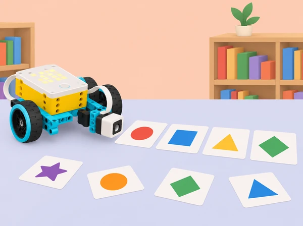

Paraules en llista, històries en ruta
🏷️ Python: llistes i joc de paraules
🌱 Situació, repte i intenció
No usem els textos de l’alumnat com a dades d’entrenament ni els publiquem sense permís.
La situació adapta les sis lliçons de la unitat 10 Lists de LEGO Education Introduction to Python Programming · Course 2: crear i consultar llistes de lletres amb condicions; construir una rutina seqüenciada amb valors del sensor de moviment; comparar dues llistes en un joc de raonament; afegir a una llista dades de proves d’un mecanisme; fer un joc de paraules amb més d’una llista i el sensor de color; i donar/usar feedback.
Canviem ioga, salts i jocs de marca per seqüències de moviment de maqueta, mesures mecàniques no corporals i microrelats de llocs imaginaris o coneguts del municipi, mantenint explícits l’ordre, les dades i la comparació.
🎯 Aprenentatges i vocabulari
- Crear una llista en Python, accedir a valors per índex i explicar que la numeració comença en zero.
- Usar una variable d’índex i una condició composta per recórrer o validar elements triats.
- Organitzar dues llistes relacionades (per exemple, llocs i accions), comparar-les i detectar correspondències, diferències o posicions sense parella.
- Afegir dades mesurades de proves a una col·lecció i documentar-ne unitats, condicions i interpretació.
- Combinar una lectura de sensor amb una selecció de llista de manera que l’entrada no reconeguda tinga resposta explícita.
- Descompondre el joc en lectura, selecció, verificació, missatge i moviment; provar funcions i condicions sense dependre que el mecanisme funcione perfectament.
- Fer feedback específic sobre l’ordre, la regla i l’accessibilitat del joc, i revisar el codi sense reescriure el treball d’un altre equip.
Llista: seqüència ordenada de valors que es guarda amb un sol nom. Element: una dada dins d’una llista. Índex: posició numèrica d’un element, habitualment des de 0 en Python. Correspondència: relació prevista entre elements de dues llistes.
llocs = ["plaça", "hort", "biblioteca"]
accions = ["saluda", "observa", "comparteix"]
posicio = 1
print(llocs[posicio], accions[posicio])Aquest exemple general associa valors que comparteixen índex; si les llistes no tenen la mateixa llargària, cal tractar-ho abans d’accedir-hi. En SPIKE, la lectura del sensor, els ports i les funcions de llum/so/motor s’han de consultar en la Knowledge Base de la versió local.
🧰 Materials i preparació
Un set SPIKE Prime per equip, hub carregat, app SPIKE amb Python disponible, sensor de color, sensor de força opcional per a una entrada de confirmació, sensor de moviment de l’hub si es prova una seqüència de gir del dispositiu, motor i peces Technic per a un indicador lent opcional, targetes grans de formes/colors, cartó i cinta de paper, regle, diari de programació i ordinador o paper per a codi compartit.
La construcció pot ser estàtica: cap activitat depén d’un robot mòbil ni de reproduir instruccions LEGO.
Prepareu paquets de targetes amb símbol, color i paraula impresos amb contrast suficient; un color no reconegut; exemples on les llistes tenen llargàries diferents; i llistes buides per parlar de límits. Comproveu quins colors reconeix el sensor sota la llum de l’aula, amb targetes planes i a una distància fixa. El sensor pot retornar valors inestables segons el material, per això prevegeu mode de selecció manual.
Per a les proves del mecanisme, useu una fitxa gran i lleugera, recorregut curt i motor a baixa potència. Eviteu registrar dades de moviment o salut d’alumnes; si es gira l’hub per obtindre valors d’orientació, subjecteu-lo amb un suport i considereu-los dades del dispositiu.
Organitzeu rols rotatius: qui redacta i explica la llista; qui prova índexs i casos buits; qui prepara targetes/sensor; qui registra resultats i accés a la història. Acordeu prèviament que qualsevol relat inventat és voluntari, respectuós i revisat pel grup.
📅 Seqüència didàctica
Lletres, targetes i índexs (45 min)
Fase 1 · Activem i prediem
Fase 2 · Explorem i construïm
Fase 3 · Expliquem i registrem
Repte (20 min): inventeu un títol de microrelat amb un repertori de targetes de llocs o objectes. Escriviu una llista de símbols admissibles, una condició que determine si una entrada està present i una alternativa si no ho està. Per exemple, una condició composta revisa que l’índex siga major o igual que zero i menor que la longitud de la llista abans d’accedir-hi. L’alumnat no guarda noms ni paraules atribuïbles a companys.
Fase 4 · Apliquem i millorem
Fase 5 · Comprovem i reflexionem
Seqüències amb moviment i dades del hub (90 min)
Fase 1 · Activem i prediem
Entrada (10 min): observeu un patró de moviments d’un personatge de paper o d’una fletxa articulada: inclinació, retorn, pausa; escriviu-lo com una seqüència ordenada.
Fase 2 · Explorem i construïm
Sensor i valors (15 min): consulteu la documentació del sensor de moviment integrat al hub, feu una lectura amb hub quiet sobre la taula i una altra després d’una rotació controlada en un suport. Registreu eixos, valors i convenció de la biblioteca local; no confongueu un valor angular amb una instrucció d’orientació. Si la funció no està disponible, useu valors sintètics lliurats per la docent.
Fase 3 · Expliquem i registrem
Llistes i programa (25 min): creeu una llista curta d’estats/angles de mostra i associeu-los amb una llista de missatges o accions per a una seqüència de moviment representada per una fletxa/maqueta. Mostreu com un bucle i un índex poden visitar cada element per ordre; per a qui ja ho domineu, compareu un bucle amb crides repetides. No convertiu els valors a posicions motores sense calibratge.
Fase 4 · Apliquem i millorem
Fase 5 · Comprovem i reflexionem
Comparar dues llistes: joc de parelles (90 min)
Fase 1 · Activem i prediem
Repte (8 min): una guia fictícia combina llista de llocs amb llista de pistes, però les correspondències s’han desordenat. L’equip ha de detectar què concorda, què falta i què sobra.
Fase 2 · Explorem i construïm
Creació de llistes (15 min): definiu llocs i pistes amb valors de ficció i una taula de parelles esperades; incloeu un valor que aparega en una sola llista i un element duplicat deliberat.
Fase 3 · Expliquem i registrem
Fase 4 · Apliquem i millorem
Joc per torns (20 min): una parella crea una ronda de parelles amb targetes, l’altra executa el codi o fa traça manualment. Es permeten pistes accessibles en paraules i símbols; no es cronometra la lectura.
Fase 5 · Comprovem i reflexionem
Una col·lecció de proves per a un mecanisme (90 min)
Fase 1 · Activem i prediem
Pregunta (8 min): quantes proves fan falta per saber si un indicador motoritzat obri prou una portella de cartó sense eixir del seu recorregut?
Fase 2 · Explorem i construïm
Fase 3 · Expliquem i registrem
Experiment (15 min): munteu un braç articulat segur amb peces disponibles, fixe el cos del mecanisme i utilitzeu fitxes lleugeres. Enregistreu una línia base amb tres ordres i cinc repeticions d’un valor seleccionat.
Fase 4 · Apliquem i millorem
Llistes Python (20 min): guardeu els resultats simulats o recollits en una llista amb valors uniformes (per exemple, tots enters o tots booleans per separat). Recorreu la llista per comptar quantes proves han arribat i quantificar la proporció d’èxit; parleu de per què barrejar paraules, valors buits i nombres en una sola llista complica càlculs.
Fase 5 · Comprovem i reflexionem
Anàlisi i millora (20 min): compareu valors i modifiqueu una variable cada vegada. Mostreu com la llista canvia quan es repeteix el test i per què cal separar dades inicials de dades posteriors.
Joc de paraules amb sensor de color i llistes (90 min)
Fase 1 · Activem i prediem
Idea i llenguatge (10 min): creeu microfrases en llenguatge respectuós a partir de tres conjunts de paraules: llocs, accions i objectes. L’escenari pot ser la biblioteca, la plaça fictícia, un mercat o un lloc inventat per la classe; no s’hi inclouen noms de persones ni informació privada.
Fase 2 · Explorem i construïm
Arquitectura de dades (15 min): prepareu diverses llistes amb elements ordenats i una taula color → índex o categoria. Manteniu-les de longitud coneguda, no buides, i definiu una eixida neutra per a color no reconegut. Expliqueu com l’ordre altera les possibles combinacions.
Fase 3 · Expliquem i registrem
Sensor i codi (25 min): fixeu el sensor de color sobre un suport i passeu una targeta a la vegada. Python llig el color amb API comprovada en l’app, el transforma en un índex acordat i selecciona una paraula de la llista si l’índex és vàlid. Connecteu la lectura amb una matriu de llum o senyal d’un motor només si afegeix informació; el text generat pot mostrar-se a consola i targeta física.
No suposeu que una lectura de color equival a una lletra.
Fase 4 · Apliquem i millorem
Creació del joc (15 min): cada equip escriu regles clares (nombre de targetes, ordre de selecció, repeticions permeses) i prova amb entrada manual i sensorial.
Fase 5 · Comprovem i reflexionem
Partides i cobertura (15 min): una altra parella juga; l’equip registra si totes les combinacions previstes es poden executar, si apareix índex fora de rang o si una paraula queda descontextualitzada.
Feedback que millora codi i joc (30–45 min)
Fase 1 · Activem i prediem
Mostra curta (5 min): cada grup prepara targetes, llistes, comentaris del programa, una prova que ha passat, una que ha fallat i una pregunta.
Fase 2 · Explorem i construïm
Fase 3 · Expliquem i registrem
Fase 4 · Apliquem i millorem
Fase 5 · Comprovem i reflexionem
Autoavaluació (5 min): expliqueu amb un exemple el paper de l’índex i com una entrada de sensor s’ha convertit en element; assenyaleu un límit del generador de microrelats i un següent pas de millora.
🧪 Evidències i avaluació
Portafolis d’equip: llistes anotades; taula índex–element; codi amb comentaris i gestió d’índex fora de rang; diagrama que relaciona colors amb índexs; lectures de sensor i condicions de calibratge; llistes comparades amb casos iguals/diferents i llargàries distintes; dades de proves mecàniques amb unitats; resultat del joc de paraules; instruccions de partida; feedback rebut i canvi incorporat. Valoreu quatre dimensions: ús de llista i índex (consulta valors i preveu límits); comparació i condicions (distingeix ordre, correspondència i casos absents);
integració de dades (relaciona sensor, valor, regla i sortida);
♿ Participació, accessibilitat i seguretat
Les llistes es poden treballar amb targetes físiques grans, text ampliat, dictat, símbols i seqüències d’àudio opcional; no cal llegir ràpid ni distingir colors sense alternativa. La sortida del sensor també es pot seleccionar manualment. Els microrelats són ficticis o de llocs públics triats amb cura; no s’hi guarden noms, domicilis, històries personals ni trajectes. Eviteu compartir codi o text fora de l’aula sense acord. Manteniu el robot sobre taula i freneu abans de manipular-lo;
si hi ha moviment, establiu límits suaus i allunyeu les mans. La seqüència de moviments és d’una maqueta, no una rutina física obligatòria ni una avaluació corporal.
🔗 Referents i adaptació
Adapta les sis lliçons de la unitat 10 Lists del curs LEGO Education Introduction to Python Programming · Course 2: Listing Letters, Stretch Your Muscles and Lists, Mind Games, Jumping for Lists, Word Games with Lists i Ideas to Help with Word Games with Lists.
Manté l’estructura de llista/índex i condicions compostes, valors de sensor i seqüenciació, comparació de dues llistes, registre de dades de proves, integració de llistes i sensor de color en un joc, i feedback entre equips. Les referències a ioga/salts es transformen en estats d’un mecanisme de taula i mesures de prototip, sense capturar informació corporal d’alumnes. L’escenari de vocabulari, fitxes, dades d’exemple i imatge són propis; el programa i la construcció s’adapten a la dotació real i no copien instruccions oficials.
L’app i l’API s’han de verificar en el dispositiu local.